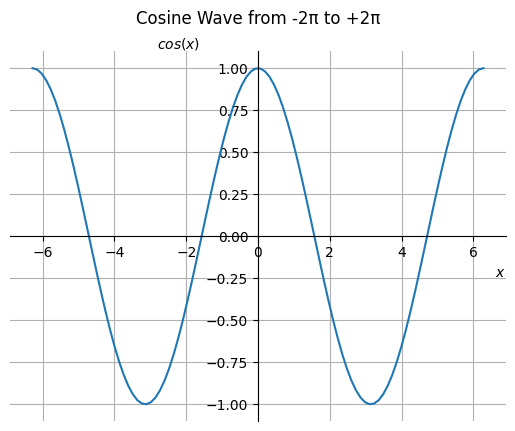

Grunnleggende om python#

I denne notisbok går vi gjennom python verktøy som blir brukt i dette kurset. Først ser vi hvordan vi kan bruke python i en jupyter notisbok til å gjøre helt enkle ting. Etterpå går vi gjennom noen pakker i python som er gode til å analysere data og gjøre numeriske beregninger.
# @title Importering av jupyterquiz
# Her importeres en quizz modul for jupyter.
# Hvis den ikke allerede er installert blir den installert.
try:
from jupyterquiz import display_quiz
except:
!pip install jupyterquiz
from jupyterquiz import display_quiz
La oss si at vi ønsker å finne løsningene til andregradsligningen \(x^2 − 2x + 1 = 0\). Hvis vi skriver \(a = 1\), \(b = −2\) og \(c = 1\), da vet vi at løsningene er \(x_1 = \frac{-b + \sqrt D}{2a}\) og \(x_2 = \frac{-b - \sqrt D}{2a}\) der \(D = b^2 - 4ac\).
# Siden vi kommer til å bruke pakken numpy til å gjøre beregninger importerer vi den allerede nå.
# Bemerk at vi gir den det kortere aliaset "np".
import numpy as np
Kodesnutter#
Under finner du en kodesnutt som skal finner disse løsningene. Uheldigvis forteller den ikke til oss hva løsningene er. Det blir første quizspørsmål i denne notisboken å svare på hva løsningene er.
# skriver inn koeffisientene til ligningen
a = 1
b = -2
c = 1
# Beregner determinanten D
D = b**2 - 4*a*c
# Beregner kvartratroden av D
sqrtD = np.sqrt(D)
# Beregner x_1
x_1 = (-b + sqrtD) / (2*a)
# Beregner x_2
x_2 = (-b - sqrtD) / (2*a)
# lenke til quizspørsmål
git_path="https://raw.githubusercontent.com/mbr085/V25MAT102/main/notebooks/uke3/"
display_quiz(git_path+"k1_1.json")
Forklar til de som sitter rundt deg:#
Hvordan fant du ut hva verdiene til \(x_1\) og \(x_2\) er?
Løs andregradsligningen $x^2−5x+6=0$. Kan du enkelt endre på kodesnutten i celle `[4]` slik at den løser denne ligningen?Funksjoner#
Hvis vi vil regne ut røtter til andregradsligninger på formen \(ax^2 + bx + c\) kunne det være praktisk å kunne skrive noe i retning av \(x_1 = f(a,b,c)\) og \(x_2 = g(a,b,c)\) for to funksjoner \(f\) og \(g\) som avhenger de tre variablene \(a\), \(b\) og \(c\). For eksempel kunne vi skrive $\(f(a,b,c) = \frac{-b + \sqrt{b^2 - 4ac}}{2a}\)$
Kodesnutten over kan bli laget om til to slike funksjoner på denne måten:
def f(a, b, c):
# Beregner determinanten D
D = b**2 - 4*a*c
# Beregner kvartratroden av D
sqrtD = np.sqrt(D)
# Beregner x_1
return (-b + sqrtD) / (2*a)
def g(a, b, c):
# Beregner determinanten D
D = b**2 - 4*a*c
# Beregner kvartratroden av D
sqrtD = np.sqrt(D)
# Beregner x_2
return (-b - sqrtD) / (2*a)
Vi kan bruke funksjonene og til å finne andregradsligningen \(x^2 - 5x + 6 = 0\):
f(1, -5, 6), g(1, -5, 6)
(np.float64(3.0), np.float64(2.0))
Bruk funksjonene \(f\) og \(g\) til å løse ligningen \(x^2 - 4x + 4 = 0\).
En stor fordel med funksjoner er at vi kan unngå å skrive samme kodesnutt mange ganger. Hvis vi ser på funksjonene over ser vi at vi gjentar beregningen av kvatratroten til diskriminanten \(D\). Dette kan vi unngå ved innføre enda en funksjon: Vi kaller de nye versjonene \(ff\) og \(gg\) for å unngå å bruke samme navn som vi har brukt tidligere.
def kvatratroten_av_D(a, b, c):
# Beregner determinanten D
D = b**2 - 4*a*c
# Beregner kvartratroden av D
return np.sqrt(D)
def ff(a, b, c):
return (-b + kvatratroten_av_D(a, b, c)) / (2*a)
def gg(a, b, c):
return (-b - kvatratroten_av_D(a, b, c)) / (2*a)
Oppgave:#
Fyll inn innhold i python funksjonen h under, som gitt tre tall \(a\), \(b\) og \(c\) skal beregne \(a + b^2 - c^2\), og bruk den til å løse følgende quiz der du skal angi tallet \(h(a, b, c) = a + b^2 - c^2\) for forskejllige kombinasjoner av tallene \(a,\) \(b\) og \(c\):
def h(a, b, c):
return
display_quiz(git_path+"k1_2.json")
Plotting av grafer#
Det er mulig å tegne mange forskjellige figurer med pakken matplotlib.pyplot. For å bruke denne pakken må vi først importere den. Grunnen til dette er at det
finnes mange pakker, og python ville blit alt for klossete og treg hvis alle verdens pakker ble inkludert som standard.
Det finnes mange måter å importere pakker på. Vi kan velge å gi pakker et kort navn som vi enkelt kan huske. For pakken matplotlib.pyplot er det
vanlig å gi den det korte navnet plt:
import matplotlib.pyplot as plt
Pakken numpy som vi allerede har importert med det korte navnet np kan gi oss tall som ligger jevnt mellom to endeverdier:
x = np.linspace(-2*np.pi, 2*np.pi, num=10)
Hvis vi vil se tallene vi har generert kan vi enkelt og greit spørre jupyter hva \(x\) er for noe:
x
array([-6.28318531, -4.88692191, -3.4906585 , -2.0943951 , -0.6981317 ,
0.6981317 , 2.0943951 , 3.4906585 , 4.88692191, 6.28318531])
Pakken numpy (forkortet np) har mange innebyggede funksjoner som kan anvendes på lister av tall som listen x over. For eksempel sinus funksjonen. La oss anvende np.sin funksjonen
på x og gi resultatet navnet y:
y = np.sin(x)
Vi kan nå plotte x-verdiene mot verdiene til y = np.sin(x):
plt.plot(x, y)
[<matplotlib.lines.Line2D at 0x27984434820>]
Denne figuren er litt rar. Hvis vi velger å ta med flere x-verdier får vi en figur som viser bedre at det er sinusfunksjonen vi jobber med:
xx = np.linspace(-2*np.pi, 2*np.pi, num=100, endpoint=False)
yy = np.sin(xx)
plt.plot(xx, yy);
Når vi tegner en figur kan det være hjelpsomt å ha med litt tekst i figuren, som tittel og betegnelse på aksene. Dette går greit med matplotlib:
plt.plot(xx, np.sin(xx))
plt.title('Grafen til sinus funksjonen')
plt.xlabel('$x$')
plt.ylabel('$sin(x)$');
Det går også an å tegne koordinatakser. Denne typen arbeid er chatgpt veldig god til å hjelpe med.
ax = plt.gca()
ax.plot(xx, np.sin(xx))
#plt.title('Grafen til sinus funksjonen')
#ax.set_xlabel('x')
ax.set_xlabel('$x$', size=14, labelpad=-24, x=1.03)
ax.set_ylabel('$sin(x)$', size=14, labelpad=-21, y=1.02, rotation=0)
#ax.set_ylabel('$sin(x)$')
# Set bottom and left spines as x and y axes of coordinate system
ax.spines['bottom'].set_position('zero')
ax.spines['left'].set_position('zero')
# Remove top and right spines
ax.spines['top'].set_visible(False)
ax.spines['right'].set_visible(False)
Oppgave:#
Skriv kodesnutter som lager disse figurene:Her kan det være lurt å spørre chatgpt eller Gemini om hjelp.
For eksempel kan du spørre på denne måten:
“make a cosine wave plot with grid and coordinate axis where the xlabel is on the right and the ylabel is on the top”


Dataanalyse#
Vi slutter denne notitsbok med å analysere et datasett. Først må vi laste inn et datasett, og deretter trenger vi å kunne visualisere deler av datasettet.
For å demonstrere på offentlig tilgjengelig data som det er enkelt å forholde seg til laster vi ned daglig meteologisk data for Bergen. For enkelthets skyld ser vi på daglig gjennomsnittstemperatur. Datasettet inneholder mere informasjon som vi ignorerer for nå.
Først importerer vi funksjonalitet som vi trenger. Modulen pandas blir importert med det korte navnet pd og modulen meteostat blir importert.
# Her importeres Point og Daily funksjonalitetene fra meteostat modulen.
# Hvis meteostat ikke allerede er installert blir den installert.
try:
import meteostat
except:
!pip install meteostat
import meteostat
# Her importeres modulen pandas som pd
import pandas as pd
# Her importeres funksjonaliteten datetime fra modulen datetime.
# Datetime gir oss en bekvem måte å jobbe med tidsdate på.
from datetime import datetime, timedelta
# Sett tidsperioden vi vil hente data fra
# Data for fremtiden kan ikke lastes inn, så når vi ber om å laste inn data får vi data helt opp til i dag.
start = datetime(1973, 1, 1)
end = datetime.today()
# Vi angir GPS koordinatene til Bergen
# Google maps gir oss koordinatene under. Høyden gjetter jeg meg til.
bergen = meteostat.Point(60.38526, 5.328060, 10)
# Vi laster ned daglige målinger for den angitte tidsperioden
data = meteostat.Daily(bergen, start, end)
data = data.fetch()
data.loc[end - timedelta(days=14): end].plot(y=['tavg'], style='-');
data.loc[end - timedelta(days=14): end]
| tavg | tmin | tmax | prcp | snow | wdir | wspd | wpgt | pres | tsun | |
|---|---|---|---|---|---|---|---|---|---|---|
| time | ||||||||||
| 2025-03-05 | 8.1 | 7.0 | 9.1 | 50.3 | NaN | 195.0 | 20.7 | 50.4 | 1000.7 | NaN |
| 2025-03-06 | 8.4 | 7.5 | 9.3 | 0.0 | NaN | 183.0 | 15.5 | 49.7 | 1005.6 | NaN |
| 2025-03-07 | 8.0 | 6.2 | 9.7 | 5.2 | NaN | 158.0 | 16.1 | 44.3 | 1009.5 | NaN |
| 2025-03-08 | 5.9 | 3.0 | 8.3 | 6.5 | NaN | 103.0 | 7.0 | 35.3 | 1015.9 | NaN |
| 2025-03-09 | 7.8 | 5.4 | 10.0 | 0.0 | NaN | 166.0 | 15.6 | 34.2 | 1011.2 | NaN |
| 2025-03-10 | 5.3 | 3.0 | 8.1 | 5.0 | NaN | 3.0 | 9.4 | 25.6 | 1005.9 | NaN |
| 2025-03-11 | 4.1 | 1.7 | 6.6 | 0.0 | NaN | 347.0 | 5.8 | 20.9 | 1002.0 | NaN |
| 2025-03-12 | 3.7 | 1.0 | 7.6 | 0.0 | NaN | 32.0 | 7.1 | 28.1 | 1001.1 | NaN |
| 2025-03-13 | 3.1 | -0.1 | 7.0 | 0.0 | NaN | 1.0 | 7.6 | 28.4 | 1002.4 | NaN |
| 2025-03-14 | 3.1 | 0.4 | 7.4 | 0.0 | NaN | 357.0 | 9.8 | 36.7 | 1010.0 | NaN |
# Plot gjennomsnittstemperatur
data.plot(y=['tavg'])
plt.show()
Spørsmål:#
Hva kan du si om temperaturen i Bergen når du ser på figuren over?
Er der et spørsmål om temperaturen i Bergen du kunne ønske å få svar på gitt middeltemperaturen i byen hver dag helt siden 1973?
La oss spørre litt om hva data egentlig er for noe. Enkleste måte å gjøre det på er ved å skrive data til python og se hva som skjer.
data
| tavg | tmin | tmax | prcp | snow | wdir | wspd | wpgt | pres | tsun | |
|---|---|---|---|---|---|---|---|---|---|---|
| time | ||||||||||
| 1973-01-01 | 7.0 | 5.9 | 7.7 | NaN | NaN | NaN | NaN | NaN | NaN | NaN |
| 1973-01-02 | 7.6 | 6.4 | 8.6 | NaN | NaN | NaN | NaN | NaN | NaN | NaN |
| 1973-01-03 | 5.2 | 3.7 | 7.7 | NaN | NaN | NaN | NaN | NaN | NaN | NaN |
| 1973-01-04 | 6.3 | 4.8 | 8.6 | NaN | NaN | NaN | NaN | NaN | NaN | NaN |
| 1973-01-05 | 7.8 | 5.0 | 8.5 | NaN | NaN | NaN | NaN | NaN | NaN | NaN |
| ... | ... | ... | ... | ... | ... | ... | ... | ... | ... | ... |
| 2025-03-10 | 5.3 | 3.0 | 8.1 | 5.0 | NaN | 3.0 | 9.4 | 25.6 | 1005.9 | NaN |
| 2025-03-11 | 4.1 | 1.7 | 6.6 | 0.0 | NaN | 347.0 | 5.8 | 20.9 | 1002.0 | NaN |
| 2025-03-12 | 3.7 | 1.0 | 7.6 | 0.0 | NaN | 32.0 | 7.1 | 28.1 | 1001.1 | NaN |
| 2025-03-13 | 3.1 | -0.1 | 7.0 | 0.0 | NaN | 1.0 | 7.6 | 28.4 | 1002.4 | NaN |
| 2025-03-14 | 3.1 | 0.4 | 7.4 | 0.0 | NaN | 357.0 | 9.8 | 36.7 | 1010.0 | NaN |
19066 rows × 10 columns
Hvis vi vil vite litt mere om hva data er for noe kan vi spørre om typen til data.
type(data)
pandas.core.frame.DataFrame
Vi får å vite at data er en DataFrame. Dette er det næmeste vi kommer på et exel regneark i python.
Et regneark kan leses inn i en DataFrame i python og en DataFrame kan eksporteres til en excel fil.
Ser vi på informasjonen i data ser vi at det står NaN på mange plasser. Det betyr at vi mangler data på disse
plassene. Det ser ut som om at det ikke mangler data i kolonnen tavg. Vi kan spørre hvor mange ganger det står NaN i denne kolonnen:
np.sum(np.isnan(data['tavg']))
np.int64(146)
Det er kjedelig. Det står NaN i kolonnen tavg!
Spørsmål:#
Er der noen meningsfulle tall vi kan skrive inn på de plassene der informasjon mangler?
Hva skjer i linjen under?
Bruk gjerne google eller Gemini til å finne svaret!
data['tavg_ffill'] = data['tavg'].ffill()
data.plot(y=['tavg_ffill', 'tavg'])
<Axes: xlabel='time'>
Spørsmål:#
Hva skjer i linjen under?
Bruk gjerne google eller Gemini til å finne svaret!
data['Rolling_Mean_tavg'] = data['tavg_ffill'].rolling(20*365).mean()
Spørsmål:#
Hva forteller figuren under til oss?
data.plot(y=['Rolling_Mean_tavg'])
<Axes: xlabel='time'>
Spørsmål:#
Kan du lage en figur som forteller hvordan tiårlig gennomsnittstemperatur endrer seg?